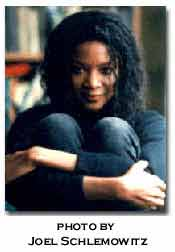

Wanda Phipps
WORKING NOTES by Wanda Phipps
The morning poem is part of a series. Inspired by other writers who have done the same, I wrote a poem every morning upon waking. It lasted for a few months and I wound up with around 60 or so poems. I wanted to investigate the hypnogogic state, that weird and wonderful place that holds bits of dreams of the night before, recent and not so recent memories and subtle visions for the future. They ended up being documents of dailiness with more than a few surprising twists. In the other poem I suppose I did the same thing only in a fully awakened state (or the closest that most of us get to that). Like most of my poems they deal with desire, sensation, female energy and the visceral nature of language.
TWO POEMS:
language
is essentially
the same
under differences
people are essentially
ambiguous
my hands and feet
are always colder
than the rest
of my body
his hair
all over his body
is very long
and fine
and energy
is always
separate ends
of the same
thing
her pale toes
were black
with mud
that night
and i saw
the lawn sprinklers
on broadway
water pedestrians
also
if they
jay-walked.
I forgot
the time
with old poems
old boxes
old papers
photographs
and the Big Bridge
got the boxes
I hope so
how'd you like
the party
blinds fell down
behind glasses and
stone face--the Brit
not speaking
only watching
evaluation
not enough room
squeezing emptiness
into space
giggles and spankings
old words
old thoughts
the books are packed
and labeled fic/lit
psych/phil
Homer to use
spirit books
there's a list
and this is another
slightly Japanese
wardrobe and
perfumed soaps
the 3-d glasses in
the photo and the
master of the house
of funk a turntable
unamplified
faux fur turns round
and round where
will the tryst be
this time--who are
the partners
old wine
old looks
a smile can be
not a smile
a kiss not a kiss
but a city
operational I am
with tea and mobility
fall into the rhythm
that's a sure step
old lines
old minds
step on the leather
there's volcanic O.
and she's in the desert
or Rosalind's feather
or Orlando's in the wall
a landscape will
succeed me--outlive me
be me
old ties
old blues
old tune
your machine's in the corner
broke your head on the moviola
now make the dinner table
new for a new beginning
put another coat of paint on the shelf
old tears
old ways
old baggage
here comes a twister
Annie's prison reports
charred records
cool breeze
cops on the corner
and bullhorns in the park
old name
old news
old fight
BIO: Wanda Phipps is the author of the chapbook Lunch Poems (Booglit), and her poems have been published in Agni, Exquisite Corpse, Hanging Loose, and The World. She coordinated several reading series at the Poetry Project at St. Mark's Church. Your Last Illusion or Break Up Sonnets is forthcoming from Situations in Spring 2000. Visit her website Mind Honey. She can be reached by email at wanda@interport.net